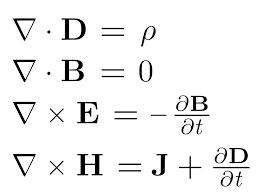

A lo largo de la historia se han ido realizando distintas interpretaciones de la luz y la radiación.
- Los griegos daban interpretaciones místicas que poco podían estudiarse de manera científica.
- Para los árabes, siglo XI, la luz se explicaba sólo con los fenómenos de reflexión y refracción.
- A finales del siglo XVII surgen las primeras teorías científicas:
- Huygens, 1690: la luz es una onda mecánica que se propaga a través del éter. Añade la explicación de los fenómenos de difracción e interferencia y especifica que la velocidad de la luz es menor en medios más densos.
- Newton, 1704: la luz está formada por partículas y no produce interferencias ni difracción. Su velocidad es mayor en medios más densos. Su hipótesis prevalecerá dada su reputación en otros campos de la física.
- Young (1810) y Foucalt(1855) observan la difracción y que la velocidad de la luz disminuye en el agua. Se vuelve a la teoría ondulatoria.
- Maxwell (1855) demuestra que la luz es la combinación de los campos $\vec E$ y $\vec B$, por tanto es una onda transversal que no necesita ningún medio para propagarse.
- A finales del S. XIX queda asentada y demostrada la teoría de Maxwell aunque se quedarían por explicar algunos fenómenos: la radiación térmica, el efecto fotoeléctrico y los espectros atómicos.